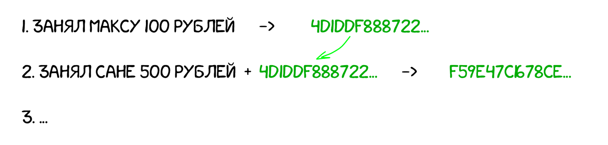

Потому для большей безопасности Свят решает хешировать не саму только запись,
а складывать её вместе с хешем от прошлой записи.
Теперь все следующие записи зависят от предыдущих.
Если изменить хотя бы одну строчку, то придется пересчитать хеши всех остальных ниже по списку.

Так у Свята появляется личный связный список.